一、背景
为什么要写这篇文章
我是从2018年开始接触领域驱动设计（DDD），当时在前辈的推荐下拜读过Eric Evans的《领域驱动设计》，这本书是领域驱动设计的开山鼻祖，但是读完后依然一头雾水，有一种不明觉厉，但是又不得其法的迷茫感。
后面我又阅读了Vaughn Vernon的《实现领域驱动设计》，跟随着作者在虚拟公司SaaSOvation下用DDD实践了CollabOvation和ProjectOvation两个虚拟项目，算是窥得了领域驱动设计的门径。但是这本书成书时间在2013年，距今已经10多年了，这其间业界技术早已发生翻天地覆的变化，书中的实践项目已经显得有些过时了。
学习领域驱动设计一路跌跌撞撞，我希望把自己的理解和思考沉淀下来，如果同时能够对你有帮助就更好了。在本文中，我将借鉴《实现领域驱动设计》的做法，介绍领域驱动设计的基本概念的同时，用一个虚拟的公司和一个虚拟的项目，把领域驱动设计进行落地实践。
虚拟的业务场景
这里我们虚拟一个业务场景，用于本文的演示用例。下文中的知识介绍以及代码演示，都基于这个业务需求背景。
假如你的公司叫“智学公司”，公司的主营业务是做知识付费，这个知识付费的产品叫做“智慧课堂”（名字是ChatGPT帮我起的）
公司会邀请一些业界专家来当作者，作者会在“智慧课堂”中开设课程专栏，用户可以选择自己感兴趣的专栏进行付费订阅，用户可以阅读订阅过的专栏文稿。“智学公司”会根据最初的合同给作者佣金分成。
这里提一个问题，假如你是“智学公司”的CTO，你将会怎样来对“智慧课堂”进行架构设计，又如何给团队分工呢？在这里可以停下来几分钟动笔画一下。看完本文后，再回过头来看看这个问题和你最初想法是否一致。
本文的代码
本文的代码是基于业界流行的技术，项目基于上文的虚拟公司和虚拟产品，不涉及公司的隐私数据。
后端微服务1：https://github.com/eyebluecn/smart-classroom-misc
后端微服务2：https://github.com/eyebluecn/smart-classroom-subscription
前端项目：https://github.com/eyebluecn/smart-classroom-front
在线演示地址：https://classroom.eyeblue.cn/
本文的行文逻辑
本文内容比较多，这里把主要的内容简要介绍一下，让大家有一个大的逻辑脉络印象。
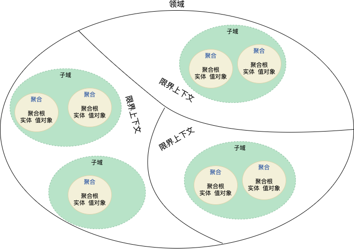
好了，背景介绍完毕，下面回归到我们的正题。
二、DDD是什么
1. MVC模式
那我们就先看看没有DDD，软件开发都是怎么做的？
拿大家熟悉的MVC模式举例，这里的Model是数据库模型，业务逻辑在Controller中实现（一般会由Service来辅助实现），View层主要负责视图展示。
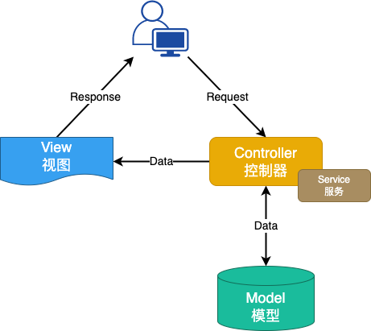
对于业务逻辑不复杂的软件开发，MVC是简单高效的方法。但是随着业务逻辑愈来愈复杂，MVC会开始力不从心。主要体现在这几个方面：
- MVC模式仅仅反应了软件层面的架构，它不包含业务语言，无法使用该设计直接和业务对话。
- MVC模式天然切割了数据和行为，然后用数据库实现数据，用服务实现行为，容易造成需求的首尾分离。
- 缺乏明确的边界划分，至少在顶层设计层面没有边界划分的规范要求，更多地是靠技术负责人根据经验进行划分，大规模团队协作容易出现职责不清晰、分工不明确。
传统的开发模式或多或少都存在上面的问题。
DDD就应运而生了：
2. DDD定义
领域驱动设计（英文：Domain-Driven Design，缩写DDD）是一种模型驱动设计的方法，通过领域模型捕捉领域知识，使用领域模型构造更易维护的软件。
模型在领域驱动设计中，有三个重要用途：
- 通过模型直接反映软件实现的结构。
- 以模型为基础形成团队的统一语言。
- 把模型作为精粹的知识，用于传递。
3. DDD的价值
因此DDD能够带来这几方面的价值
统一语言：
团队（业务方、产品、设计、技术等）在一个限定的上下文中有意识地形成对事物统一的描述，从而形成统一的概念（模型）。统一语言用于需求文档、PRD文档、系分文档、代码以及日常沟通中，统一的概念和术语可以极大地提升沟通效率和工作效率。
面向业务建模：
领域模型和数据模型分离，业务复杂度和技术复杂度分离。DDD聚焦于领域模型，将技术实现细节从模型中剥离出来，能够更好地降低业务和技术的耦合度。
边界清晰的设计方法：
通过对需求的识别及分类，划分出领域、子域和限界上下文，进而指导团队成员分工协作，从而做到将复杂的问题分而治之地解决。
业务领域的知识沉淀：
通过模型与软件实现关联，统一语言与模型关联，反复论证和提炼模型，使得模型与业务的真实世界保持一致，从而促使业务知识通过模型得以传递和沉淀，
三、DDD的基本概念
在DDD中涉及到很多概念，对于新手来说，往往会目不暇接，但是了解熟悉这些概念又是必须的，所以我尽可能地使用通俗易懂的语言，并结合实例来说明。
1. 统一语言
团队（业务方、产品、设计、技术等）在一个限定的上下文中有意识地形成对事物统一的描述，从而形成统一的概念（模型），这些统一的描述和统一的概念就是统一语言，统一语言主要源自于领域模型的概念与逻辑，作为对业务维度的补充和展开，也会将限界上下文、系统隐喻等纳入到统一语言中。
以“智慧课堂”商业模式中的这句话“用户可以选择自己感兴趣的专栏进行付费订阅”，进行简单的建模。

根据这个模型，我们可以形成统一语言：
- 用户（User）是指所有在“智慧课堂”注册过的人。（来自领域模型概念）
- 订阅的专栏（Subscription）是指用户付费过的专栏。（来自领域模型概念）
- 用户可以订阅多个专栏。（来自领域模型逻辑）
- 订阅。（来自限界上下文）
通过定义与解释，我们使这些词语在其所使用的上下文中没有歧义。再通过这些基础词汇，去描述业务的行为或者规则，慢慢就可以将其确立为跨业务与技术的统一语言了。统一语言是在使用中被确立的。
有了统一语言后，我们就可以很方便的描述需求：
用户(User)可以查阅自己订阅过的专栏（Subscription），也可以查看其中的教学内容。
也可以用来描述测试用例：
当用户(User)已购买过某个专栏（Subscription），那么当他访问这个专栏时，就不需要再为内容付费。
这里仅仅举了两个使用统一语言的场景，当所有工种角色都接受它，用它去描述业务和系统的时候，它才会成为真正的统一语言。
2. 战略设计
在DDD中可以分为战略设计和战术设计，各自包含的内容如下图所示：
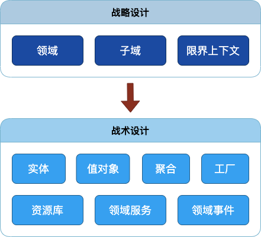
战略设计指的是对整个领域进行分析和规划，确定领域中的概念、业务规则和领域边界等基础性问题。在战略设计中，需要对领域进行全面的了解和分析，探究业务的规则和本质，并且需要考虑到领域的未来发展趋势和可能的变化。领域、子域和限界上下文属于战略设计的范畴。
领域
领域（Domain）其实就是一个组织所要做的整个事情，以及这个事情下所包含的一切内容。这是一个范围概念，而且是面向业务的（注意这里不是面向技术的，更不是面向数据库的持久化的），每个组织都有自己的人员、规则和流程，当你为该组织开发软件的时候，你面对的就是这个组织的领域。
例如，在“智学公司”的“智慧课堂”中，领域就是知识付费领域。
子域
子域是指在一个大的领域中，可以进一步划分出来的独立的业务子领域，它们有着自己的业务概念、规则和流程等。
例如，在“智慧课堂”中，子域可以有订阅域、金融域、专栏域等。
为了区分重要性的不同，我们又会将子域划分成核心域、通用域以及支撑域。
核心域
决定公司和产品核心竞争力的子域就是核心域，它是业务成功的主要因素。核心域直接对业务产生价值。例如，在“智慧课堂”中，订阅域就是核心域。
通用域
没有太多个性化的诉求，同时被多个子域使用的、具有通用功能的子域就是通用域。通用域间接对业务产生价值。例如，在“智慧课堂”中，权限域、登录域就是通用域。
支撑域
支撑其他领域业务，具有企业特性，但不具有通用性。支撑域间接对业务产生价值，例如，在“智慧课堂”中，专栏域、评论域就是支撑域。
限界上下文
限界上下文就是业务边界的划分，这个边界可以是一个子域或者多个子域的集合。如何进行划分，一个行之有效的方法是一个界限上下文必须支持一个完整的业务流程，保证这个业务流程所涉及的领域都在一个限界上下文中。限界上下文是微服务拆分的依据，即每个限界上下文对应一个微服务。
例如，在“智慧课堂”中，可以有一个限界上下文叫“专栏订阅上下文”，它就包含了订单域和订阅域。
3. 战术设计
战术设计则是在战略设计的基础上，对领域中的具体问题进行具体的解决方案设计。战术设计关注的是领域中的具体情境和场景，需要针对具体的问题进行具体的分析和设计，以满足业务需求。实体、值对象、聚合、工厂、资源库、领域服务和领域事件就属于战术设计的范畴。
实体
定义：实体是拥有唯一标识和状态，且具有生命周期的业务对象。实体通常代表着现实世界中的某个概念，实体与领域模型密切相关，它是领域模型中多个属性、操作或者行为的载体。例如：在“智慧课堂”中，专栏、课程文章、订阅都是实体。
实体的代码形态一般有四种形态：
- 失血模型：模型仅仅包含数据的定义和getter/setter方法，业务逻辑和应用逻辑都放到服务层中。这种类在Java中叫POJO。
- 贫血模型：贫血模型中包含了一些业务逻辑，但不包含依赖持久层的业务逻辑。这部分依赖于持久层的业务逻辑将会放到服务层中。
- 充血模型：充血模型中包含了所有的业务逻辑，包括依赖于持久层的业务逻辑。
- 胀血模型：胀血模型就是把和业务逻辑不想关的其他应用逻辑（如授权、事务等）都放到领域模型中。
结合团队以及兄弟团队的实践，建议实体采用贫血模型，实体和领域服务共同构成领域模型。这样可以使得实体具备业务知识，但又不至于太过臃肿。
值对象
定义：通过对象属性值来识别的对象，它将多个相关属性组合为一个概念整体。在 DDD 中用来描述领域的特定方面，并且是一个没有标识符的对象，叫作值对象。值对象没有唯一标识，没有生命周期，不可修改，当值对象发生改变时只能替换。
值对象的业务形态：大多数情况下实体具有很多属性，这些属性一般都是平铺，但有的属性进行归类和聚合后能够表达一个业务含义，就将这些属性封装到一起形成值对象，从而方便沟通而无需关注细节，因此可以说值对象就是用来描述实体的特征。当然实体的单一属性也是值对象。
值对象的代码形态：值对象有两种：单一属性的值对象，例如字符串、整型、枚举等；多个属性的值对象，这时候设计成class，包含多个属性，但是没有ID，值对象中可以嵌套值对象。
聚合和聚合根
聚合是一种更大范围的封装，把一组有相同生命周期、在业务上不可分隔的实体和值对象放在一起考虑，只有根实体可以对外暴露引用，这个根实体就是聚合根，聚合也是一种内聚性的表现。
领域、子域、限界上下文、聚合都是用来表示一个业务范围，那他们的关系是怎样的呢？领域、子域、限界上下文属于战略设计，而聚合属于战术设计，聚合的范围是小于前三者的，范围大小图如下：

工厂
工厂是一种重要的设计模式，DDD只是拿来主义，用到了工厂。考虑使用工厂的主要动机：
将创建复杂对象和聚合的职责分配给一个单独的对象，该对象本身并不承担领域模型中的职责，但是依然是领域设计的一部分。工厂应该提供一个创建对象的接口，该接口封装了所有创建对象的复杂操作过程，同时，它并不需要客户去引用那个实际被创建的对象。对于聚合来说，我们应该一次性地创建整个聚合，并且确保它的不变条件得到满足。
资源库
资源库（Repository）是一种模式，用于封装数据访问逻辑，提供对数据的持久化和查询。它旨在将数据访问细节与领域模型分离，使领域模型更加独立和可测试。资源库提供了一种统一的接口，使得领域模型可以与不同的数据存储方式（如关系数据库、文档数据库、内存数据库等）进行交互，同时也提供了一些查询操作，以便在领域层中进行数据查询。如果我们使用MyBatis的话，Mapper就是对资源库的一种实现。
领域服务
有些领域中的动作看上去并不属于任何对象。它们代表了领域中的一个重要的行为，不能忽略它们或者简单地把它们合并到某个实体或者值对象中。当这样的行为从领域中被识别出来时，推荐的实践方式是将它声明成一个服务，这个服务就是领域服务。
例如，在“智慧课堂”中，订阅（Subscribe）行为是一个非常重要的领域概念，它涉及到订单创建、支付、增加订阅记录等和多个实体相关联的操作，将该行为放到任何一个实体中都不合适，在这种情况下，将“订阅”识别为领域服务是比较合适的。
领域事件
领域事件是发生在领域中且值得注意的事件。而领域事件通常意味着领域对象状态的改变。领域事件在系统中起到了传递消息、触发其他动作的作用，是解耦领域模型的重要手段之一。我们往往利用消息队列来传递领域事件。
例如，在“智慧课堂”中，当用户订阅了一个专栏后，会产生一个“专栏订阅成功”的领域事件，用户成长域会根据这个领域事件决定增加用户积分。
领域建模
到这里，DDD的核心概念就已经介绍完毕，如果还是有种不明所以的感觉也是正常的，不要着急，下面的内容将会逐步转到实践了。
领域驱动设计的核心在于领域建模，架构师的水平高低在很大程度上也体现在领域建模水平上。
领域建模的主要目的是捕捉业务知识，形成统一语言，沉淀领域模型。好的领域建模就意味着对业务要有深刻的理解，能够洞察问题本质。领域建模的产出物一般有以下内容：
- 领域模型：包含领域对象、属性、关系、行为、边界范围等各个方面，用于描述业务的本质，这也是最重要的产出物。
- 用例图：用于明确系统的功能。
- 数据模型：描述系统的数据结构和关系，包括实体关系模型、关系数据库模型等。
- 状态图：用于描述系统各个状态及其转移条件。
- 活动图：用于描述系统流程中的各个活动及其关系。
- 序列图：描述系统中各个对象之间的交互过程和消息传递序列。
- 架构模型：包含系统的物理和逻辑结构，包括组件、模块、接口等。
下面介绍两种常见的领域建模方法。
四、事件风暴建模
1. 简介
我们可以把事件看做行为的印记。比如支付这个行为。我们不需要直接描述支付这个行为，而是通过捕捉这个行为前后的事件：支付发起（Payment Started）和支付完成（Paid）。要知道，事件自身能表达的含义有限，但是将一系列事件按照发生顺序排列起来，就能还原发生过的行为。
通过寻找事件，以及事件背后的领域概念，就能完成对领域概念的挖掘和建模，这就是事件建模的底层逻辑。事件建模法是一种元方法，事件风暴建模就是事件建模的一种。
事件风暴是意大利人 Alberto Brandolini 在 2012 年创造的一种事件建模方法。在形式上，事件风暴是一种互动式建模工作坊，通过将不同背景的项目参与方汇聚一堂，集思广益，从而形成有效的模型。这也是事件风暴名称的由来——因为它本质上就是一种头脑风暴。本文事件风暴建模法主要参考引用自甫田的《事件风暴与领域建模在阿里的实践》。
2. 事件风暴语法
事件风暴通过事件、命令与策略之间的响应关系来组织逻辑。它定义了一套彩色贴纸的”语法”: 不同颜色的贴纸都有定义。浅黄色代表角色(Actor)、蓝色表示命令(Command)、粉色代表业务规则(Policy)、紫色代表系统（System）、橙色代表事件（Event）, 绿色表示阅读模型(Read Model)、红色代表热点问题(HotSpot)。

每种语法的具体含义如下：
- 行动者（Actors）是系统的使用者。这里使用者是一个相对模糊的概念，可能是现实中的人也可能是别的系统；
- 命令（Command）是由行动者发起的行为。它代表了某种决定，通常是事件的起因，也称作行动者触发命令（AIC，Actor Initiated Command）；
- 事件（Event）就是我们前文讨论过的事件；
- 系统（System）指代的是不需要了解细节的三方系统。因为不需要了解细节，所以我们可以将它们看作一个整体；
- 阅读模型（Read Model）用以支撑决策的信息。通常与界面布局有关；
- 策略（Policy）是对于事件的响应，通过策略可以触发新的命令，由策略触发的命令，被称作系统触发命令（SIC，System Initiated Command）。
- 热点问题（HotSpot）是业务痛点，瓶颈，模糊点。如果有争论，可以将双方观点用热点问题的形式记录。
事件风暴的这一系列语法的制定目的，是为了寻找到合适的载体来描述清楚业务逻辑和关键流转过程，从而更方便地在不同角色间传递领域知识。
接下来我们以“智慧课堂”中订阅这个流程作为实例，看一下如何进行事件风暴。
3. 事件风暴操作流程
准备工作
第一．准备物料：彩色贴纸、笔纸、一个足够大的房间等。房间里不要有椅子，因为在事件风暴过程中，我们希望大家都全神贯注的投入，而不是坐在椅子上开始放松。
第二．邀请正确的人：有问题的人和有答案的人。程序员、交互设计师、测试等都是有问题的人，需要通过事件风暴理解业务和产品；有答案的人通常是用户、业务或产品，他们通常能回答业务的背景，诉求和目标。
开场介绍
在事件风暴中，有一个特殊角色是主持人，一般也是事件风暴的组织者。主持人有几个重要职责，主持事件风暴、保持参与者的专注、通过提问驱动交流、总结提炼事件风暴建模成果。
在事件风暴正式开始前，由主持人介绍事件风暴是什么、有什么好处以及彩色贴纸的用法。然后介绍本次事件风暴讨论的范围和目标。
例如，此次事件风暴讨论“智慧课堂”中用户订阅专栏的场景，目标是理清从用户发起订阅到用户查看订阅专栏的整个的业务流程。
事件风暴的方式沟通业务
第一步：梳理事件（橙色贴纸）
事件是已发生且重要的事情。事件必须是既成事实，且业务关注的事情。通常主持人会先准备第一个事件（可以是系统中任一事件），然后把它贴到墙上。
假设第一个事件是：专栏已订阅。接下来主持人通过提问引导大家找到更多的事件：
事件发生前有哪些事件？（“专栏已订阅”前须有“订单已支付”事件）
事件发生后下一个事件是什么？
提问会引导参与事件风暴的同学将新发现的事件不断补充到墙上。事件要保持整体的时间顺序：先发生的事情贴在左边，后发生的事情在右边。通常大家容易关注系统的正常流程，也就是Happy path。这时候主持人需要引导大家关注业务的非正常流程Unhappy path。边界条件，异常情况通常是业务复杂性的重要原因，也是非常容易被忽视的部分。
事件一定会发生吗？（订单一定可以创建成功吗？不是，贴上“订单创建失败”事件）
追问unhappy path梳理出业务的完整视图，当大家发现新事件的速度接近停滞的时候，就应进入梳理业务规则的阶段了。
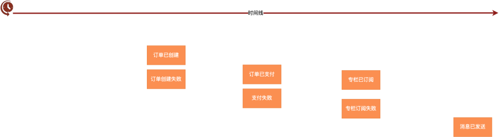
第二步：业务规则（粉色贴纸）
业务规则或者业务逻辑，是业务中最重要的部分，主持人会提出以下问题：
事件是否一定成功？如果不是，那么成功的前提条件是什么？
该事件是否会导致其他事件的发生？
例如“订单已创建”事件的业务逻辑
- 订单已创建的前提条件是专栏可订阅，同时用户未订阅过该专栏。
- 订单创建后，会导致发起支付。
第三步：行动者（浅黄色贴纸），命令（蓝色贴纸）、阅读模型（绿色贴纸）和系统（紫色贴纸）
主持人通过问题引导：
是什么触发了事件，是命令还是规则
是谁执行了动作，是人还是系统
做出动作前，用户需要获取到哪些信息
通过类似上面的问题，逐步引导大家找到Actor, Command, Read Model
第四步：热点问题（红色贴纸）
业务痛点、瓶颈、模糊点可以用红色贴纸记录，这些问题需要业务带回去讨论确定清楚，不要在事件风暴中尝试解决所有的hotspot。
第五步：故事串讲
邀请一名现场成员，按事件发生的时间顺序串讲业务，过程中，听众注意到不一致的地方，提出问题；大家一起讨论，调整相关的事件、逻辑来达成一致。
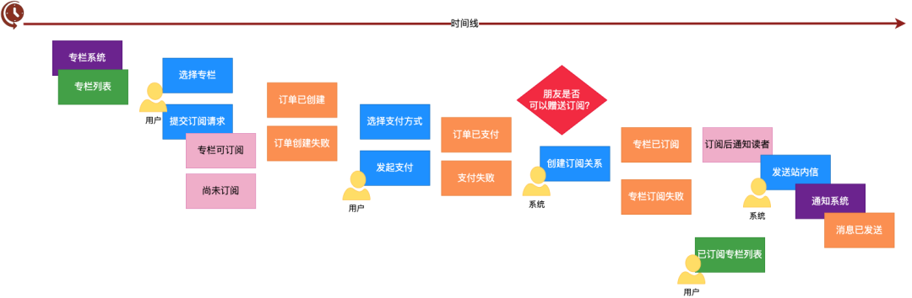
第六步：产出架构
通过事件风暴，业务流程和处理逻辑应该已经很清楚了，接下来就由架构师产出对应的架构。可以依据事件风暴产出领域模型、用例图、状态图、活动图、序列图等关键架构交付物。
4. 事件风暴小结
事件风暴法通过头脑风暴发现领域事件，以“对于事件的响应”为主要维度寻找事件间的关联，它是一种简单明快的事件建模方法。
但是事件风暴也有一些不足之处，一方面是事件风暴的模式偏重，需要不同角色的成员集体参与，涉及的人员多、流程长。另一方面，也是最关键的一点，事件风暴的成功关键在于收敛逻辑。
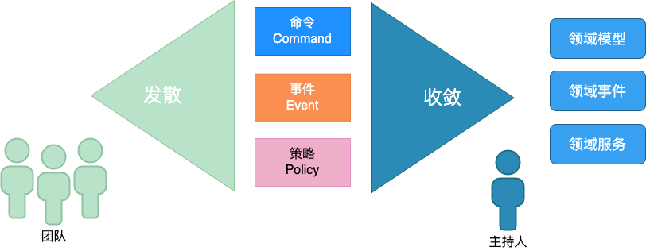
在发散阶段，所有参与者可以天马行空。不过这样的方法在产生有效信息的同时，也会产生大量的噪音。但是在收敛阶段，则会按照某一逻辑主线，合并相似概念，过滤无用信息。那么我们可以很容易地想到，如果主持人采用不同的逻辑去收敛事件，最后获得的结果也可能不尽相同。
因此事件风暴法极度依赖主持人的经验与判断，最终结果自然就会存在一定的随意性。这也使得事件风暴法变成了那种“一学就会，一用就废”的方法。有经验的老手越用越顺手，而初学者往往不得要领。
既然最终事件流的质量取决于收敛逻辑，那么我们为什么不直接从收敛逻辑出发，通过引导 - 分析直接获取事件流呢？的确可以这么做，而四色建模法也正是这样一种从收敛逻辑出发的强分析法。
五、四色建模法
1. 简介
四色建模法的起源有点复杂。最早的源头是 Peter Coad 在 1992 年研究对象模式时，为了提取可复用的对象组件而发明的四原型法。在 1997 年的时候，作为一种补充策略，Peter Coad 开始提倡在模型中引入不同的颜色，从而将模型的动态交互展示在静态的模型中，形成了彩色建模法（Color Modeling）。而后，徐昊（Thoughtworks 中国区 CTO）在 2005 年左右，将事件建模与彩色建模法结合形成了四色建模法，用以获得更具业务含义的模型，以便直接使用模型作为统一语言。
四色法主要通过三个关键逻辑寻找领域事件。这三个逻辑源自企业运营与管理实践：
- 如果有现金收入，表示承担了义务。拿钱办事，需要收集证据，说明义务履约成功。
- 如果有现金支出，表明拥有权利。花钱消灾，需要检查对方是否按时履约。
- 对于没有现金往来的，可以通过目标——实际对比，产生类似履约的约束。所谓目标——实际对比，就是设立一个目标 / 计划，然后追踪实际执行的结果。
寻找领域模型，提取统一语言，做分层与隔离，目的都是为了有效地控制变化和传播。那么我们更应该从源头入手，找到业务中相对稳定的部分去建模，而不是选择一段变化的业务去稳定地构造它的模型。毕竟我们期待领域驱动设计能够为我们带来的一切优点，都依赖于尽早地从业务侧隔离开稳定与易变的部分。
业务模式在企业生命周期内，是相当稳定的。而业务模式主要通过收入流和成本结构来体现。四色建模法的核心逻辑就源自收入流和成本结构，通过现金权责识别与收入流有关的事件，通过目标——实际对比发现与成本结构关联的事件。这是四色建模法与其他建模法的主要不同：完全拥抱业务视角，以业务的内在逻辑作为发现事件的主要逻辑。本文四色建模法主要参考引用自徐昊的《如何落地业务建模》。
2. 四色建模法语法
四色建模法之所以叫四色建模，主要是因为它里面存在四种主要的对象原型，且每一种原型都有一种颜色与之对应，一共有四种颜色，由此而得名。
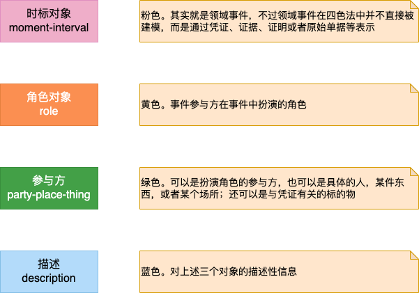
3. 四色建模法操作流程
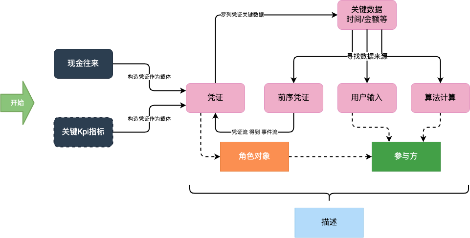
- Step1: 寻找关键现金往来，构造一个凭证表示它。然后在凭证上罗列关键数据项，主要有发生的时间点、金额等
- Step2: 针对每一项关键数据项，寻找它的来源。来源只能有三个：用户输入，由前序凭证提供，或者根据算法计算。我们需要以此为依据去寻找前序凭证
- Step3: 回到现金凭证，思考它所对应的权利与责任。这些权利与责任需要哪些凭证证明，并以此为依据，寻找后续凭证
- Step4: 无论是何种凭证，必须罗列关键数据项，并保证数据项获取的顺畅
- Step5: 如果与现金往来关联不大，那么寻找关键KPI指标，并构造一个验收凭证表示它。其余步骤与现金往来一致
- Step6: 在获取了相互关联的凭证流之后（实际就是事件流），我们可以进入模型细化阶段，围绕每个凭证，寻找参与其中的角色
- Step7: 思考哪些参与方可能扮演这些角色，并将他们加入模型中
- Step8: 通过描述对象，为模型添加补充说明
可以看到四色建模法对最终模型的构造有更为明确的要求：凭证必须围绕现金往来或 KPI；凭证间必须通过关键数据项明确关联关系。这也是说四色建模是一种强分析方法的原因：可经由明确的逻辑推导，不需要依赖于发散 - 收敛式的探索。
接下来依然用“智慧课堂”作为例子，来演示如何使用四色建模法建模。
寻找现金往来和凭证
首先我们需要思考一下在“智慧课堂”专栏的模型中，有哪些现金往来（Payment 和 Commission Payment）？很容易想到的就是读者购买专栏以及专栏作者分成这两项，构造的模型如下：
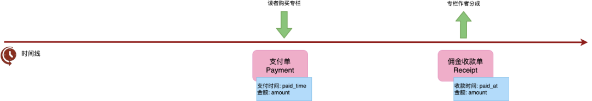
如图所示，我们构造了两个凭证去表示这两个现金往来，然后分别列出它们的关键数据项：时间点和金额。接着就可以开始追溯前序凭证了。
我们先看一下这两个凭证中相对简单的一个：读者购买专栏的凭证。
它的关键数据项金额（amount）显然不可能由读者输入，而应该由前序凭证提供。支付的前序凭证是什么呢？是订单，因为是针对订单进行支付的。因此支付的金额应该与订单的金额相等。而订单的金额显然也不可能是由读者输入的，那么订单的前序凭证是什么呢？是专栏报价，订单的金额应该与专栏报价相等。那报价哪里来的呢？是由编辑输入的。到此为止，我们就完成了一条完整的追溯，如图所示：
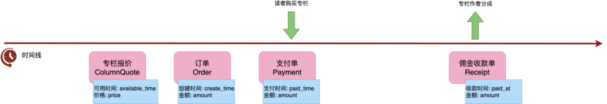
在寻找完前序凭证之后，Payment 有什么履约凭证吗？那我们要看一看，从客户那里收到的钱表示了什么权责。根据业务上下文，读者购买的是阅读专栏的权利，那么我们就需要一个凭证表示读者可以在后续阅读对应专栏里的内容。
于是我们可以引入凭证订阅（Subscription），它具有关键数据项开始时间（start_time），也就是从何时开始，用户可以阅读对应专栏的内容。我们知道这个时间必须晚于支付完成，不能允许读者在支付完成前就阅读专栏，哪怕早一毫秒都不行：
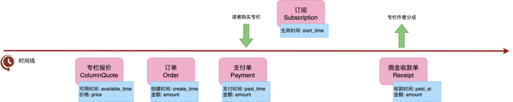
现在我们再来看专栏作者分成，和上面支付单类似，佣金支付单也有一个前序凭证，是佣金。 这里的难点在于佣金的关键数据项金额（amount）。显然不可能让作者自己输入要提取多少分成。这个分成通常是按某个规定好的时间段作为账期，比如每月一次，或者每季度一次。然后按照账期找到所有账期内读者购买的凭证，求出总销售金额，然后再按约定好的分成比例，计算作者的分成。
不过这里就有一些数据项来路不明了：分成比例（percentage）、账期日（payment days）和上次分成付款日（last paid）。那么如果我们往前追溯，可以发现包含分成比例、账期日的凭证，是专栏撰写合同，而上次分成付款日则是通过计算得到的（分成支付凭证中最晚的那个。如果没有，则默认是合同签约日）。于是我们可以得到：
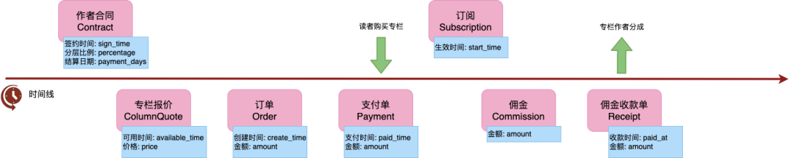
到此为止，我们获得了一条由通过关键数据项彼此关联的凭证链，同时也是领域事件流。这条凭证链表示了从作者签约、专栏定价、读者付费、作者分成的全过程，捕捉了“智慧课堂”专栏这项业务的收入流，我们称之为业务的脊梁（Backbone of the business）。
寻找角色和参与者
接下来寻找与凭证相关的角色，然后再寻找能够扮演这些角色的参与者，以及与凭证相关的标的物，如图所示：
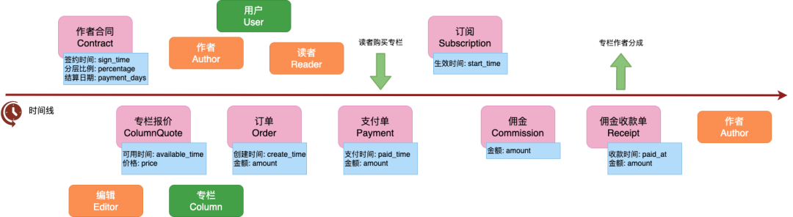
获得领域模型
按照关键数据项间的关联，将模型连在一起，稍加润色，就能得到领域模型了：
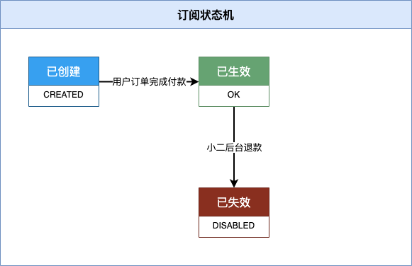
验证业务脊梁以及领域模型的有效性
找到了业务脊梁以及初步得到领域模型后，我们需要再验证一下他们的有效性，看业务能否顺畅进行。首先我们可以将所有的凭证，转化为真实的单据；然后通过角色扮演游戏，让业务方模拟业务的经营。
在验证的过程中，除了正常流程之外，我们主要需要模拟的是各种业务异常引起追溯的例子，看看被业务脊梁捕捉的数据是否能够保证我们对权责的证明。比如我们之前讲到专栏定价修改、读者不满意的情况。类似的还有作者对分成不满意，质疑分成结果，等等。
这是四色建模另一个不同于其他建模方法的地方：它认为软件系统是业务流程的加速和优化，但是模型是要用以支撑业务运营的，并不仅仅为了构造软件而设计的，因而天然地更容易被业务方接受，成为统一语言。
如果在验证过程中有问题，那么就回到前面的步骤进行修改迭代。
至此，我们就使用四色建模法完成了领域建模。
4. 四色建模法小结
四色建模法是从业务的基础逻辑，也就是收入流和成本结构出发，建模业务的经营，并从中提取领域模型的。使用四色建模法，会有一种建模建出了职业经理人的感觉。因为它更容易从纯业务角度说服业务方，采纳模型，作为统一语言。
前面举的例子是从现金流出发，通过四色建模法完成建模，围绕KPI的建模流程也大同小异。可能很快你就有疑问了，业务脊梁的建模一般都是公司CTO干的事，自己日常工作中可能只做一个很小的子域，四色建模如何来指导日常领域建模呢？
我的建议是，没有现金流或者没有明确Kpi指标的系统，没有必要强行使用四色建模法，不过借鉴四色建模法中的权责追溯，事件推导的思想对日常的建模还是大有裨益的。
落地实践
至此，理论部分就介绍完了，从本节开始，将介绍“智慧课堂”的落地实践。
六、方案设计
1. 领域模型
从前面的四色建模法中，我们已经得到了领域模型，稍加整理后得到下图：
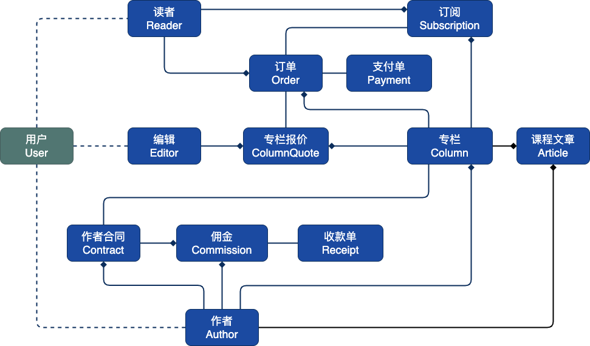
读者、编辑以及作者都可以看做是用户，但是三者在系统中所从事的动作，拥有的能力差异巨大，用户的共性仅体现在登录等极少数场景，因此本文建模更倾向于将“读者”、“编辑”以及“作者”视为三个独立的模型。下文中将不再出现“用户”。
2. 子域划分
针对上面的领域模型进行子域划分，子域划分时尽量要体现出聚合根，因此子域往往只包含一到两个领域模型，子域中的实体会以值对象的方式聚合其他子域的实体。子域划分如下图：
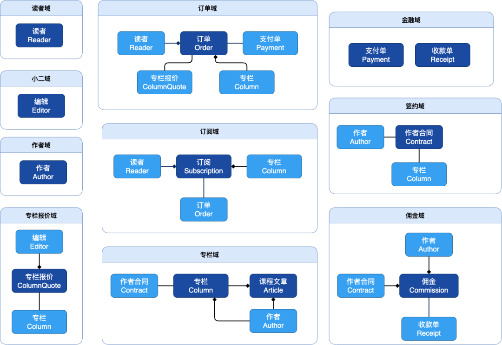
根据子域对于业务重要性的不同，可以分为核心域、支撑域和通用域：
核心域包括：订单域、订阅域
支撑域：专栏域、专栏报价域、金融域、签约域、佣金域
通用域：读者域、小二域、作者域
为了行文简洁，还有一些其他必须的支撑域和通用域没有画出来，比如消息通知域、公告域、评论域等。
3. 限界上下文划分
限界上下文中划分的一个技巧就是考虑一个完整的业务流程，保证这个业务流程所涉及的领域都在一个限界上下文中，例如“专栏订阅上下文”中包含了用户订阅这个业务流程的关键领域对象。
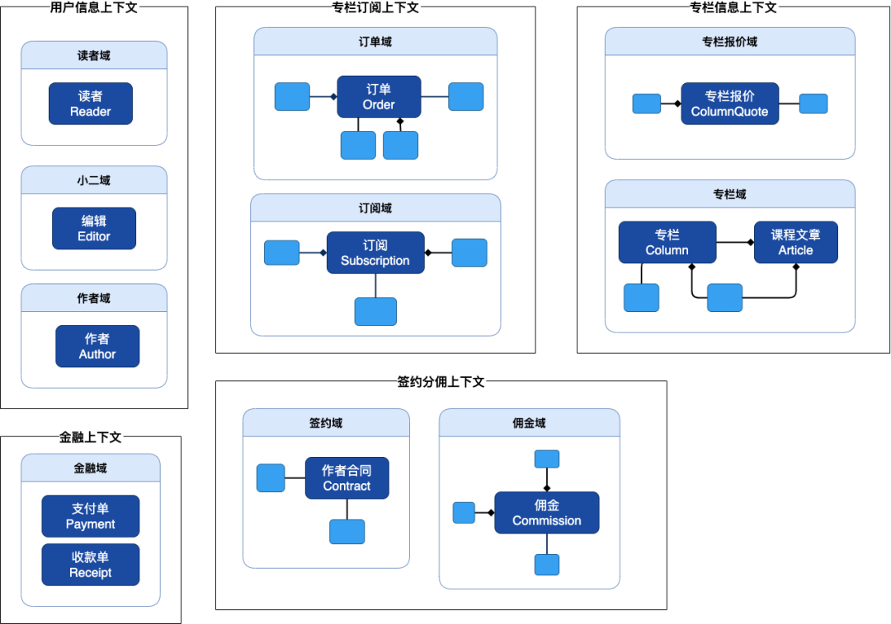
限界上下文是指导微服务系统拆分的依据，上图中根据限界上下文的划分，需要拆分成5个微服务系统，分别是 专栏订阅系统、专栏信息系统、签约分佣系统、金融系统以及用户信息系统。
到这里，顶层的架构设计已经完成了，也回答了文章开头的提问：
假如你是“智学公司”的CTO，你将会怎样来对“智慧课堂”进行架构设计，又如何给团队分工呢？
关于架构设计，领域建模部分前面已经给出，应用架构将会在“代码实施”一节介绍。 给团队分工可以根据限界上下文，比如这里由五个小组分别负责每个限界上下文的内容。
本节下文就是系分中的内容啦，这也是软件工程师们日常最熟悉的内容了。下面我们重点围绕“专栏订阅系统”来做具体实施。
4. 用例图
用例图可以清晰的表示出系统的功能，例如针对专栏订阅系统，用例图如下：
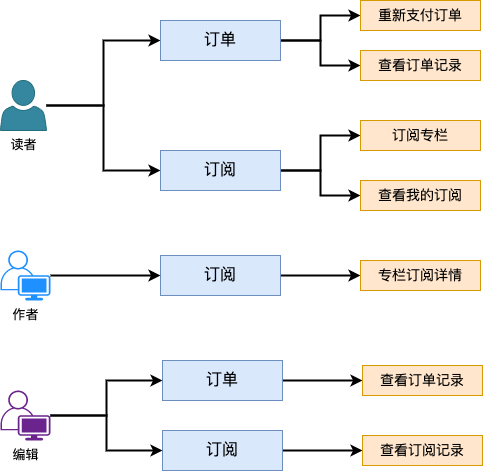
5. 状态机
逻辑清晰的状态机是刻画实体生命周期的关键，例如针对专栏订阅系统，状态机如下：
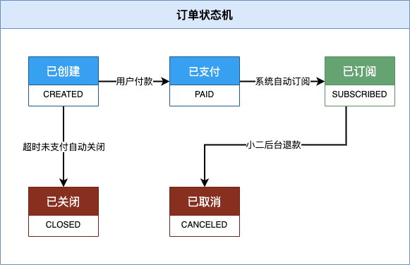
6. 活动图
活动图也叫流程图，是用来展示具体的业务流程，可以描述清楚业务具体的处理逻辑，一般流程图采用泳道图的形式表达。例如订阅和取消订阅的流程图如下：
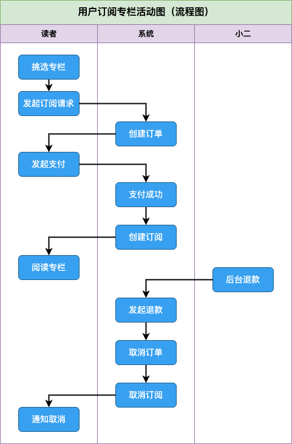
7. 时序图
时序图描述了完成某个业务流程，系统中各个对象之间的交互过程和消息传递序列，时序图可以帮助厘清系统间的依赖和调用。例如订阅的时序图如下：
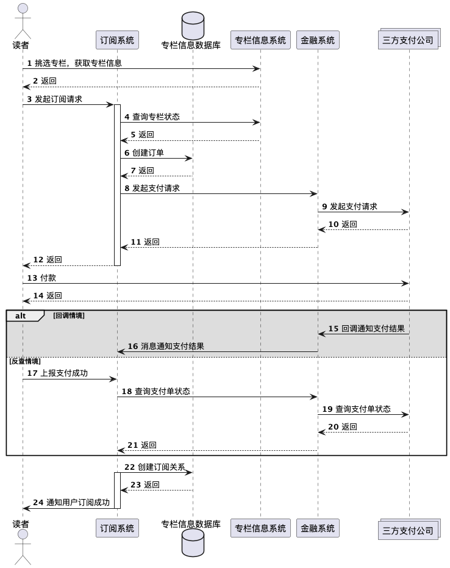
8. ER图
ER图是描述的数据库建模，可用于直接指导数据库建表。对于习惯面向数据库模型编程的工程师来说，可能画ER图是需求研发的第一步，但是在领域驱动设计中，ER图只是仓储实施细节，只会在领域建模完成后才进行ER设计。 例如专栏订阅域中ER图如下：
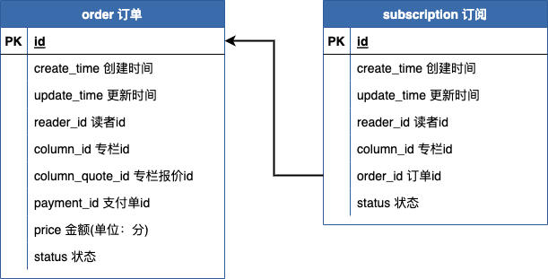
七、代码实施
终于到了编码的环节了。
1. 应用架构
上文在“限界上下文划分”一节中建议分成5个微服务。为了尽可能演示出分布式业务系统，但同时又不至于让示例工程太复杂，在演示工程中就只分为两个应用，本文重点演示“专栏订阅”中的实践，将其他限界上下文统一放到了“smart-classroom-misc”系统中。
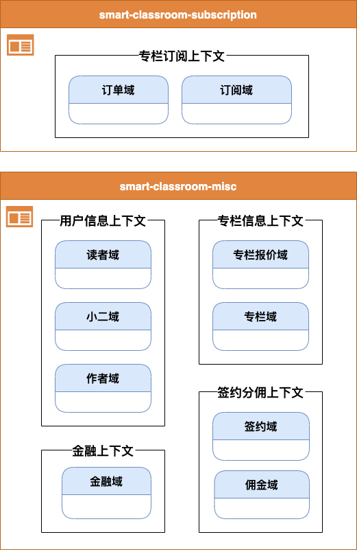
2. 应用模块分层
在每个微服务应用分层有多种方法，一个核心原则就是“高内聚，低耦合”，本文参考COLA架构并结合实际工作经验，总结了如下的应用分层：
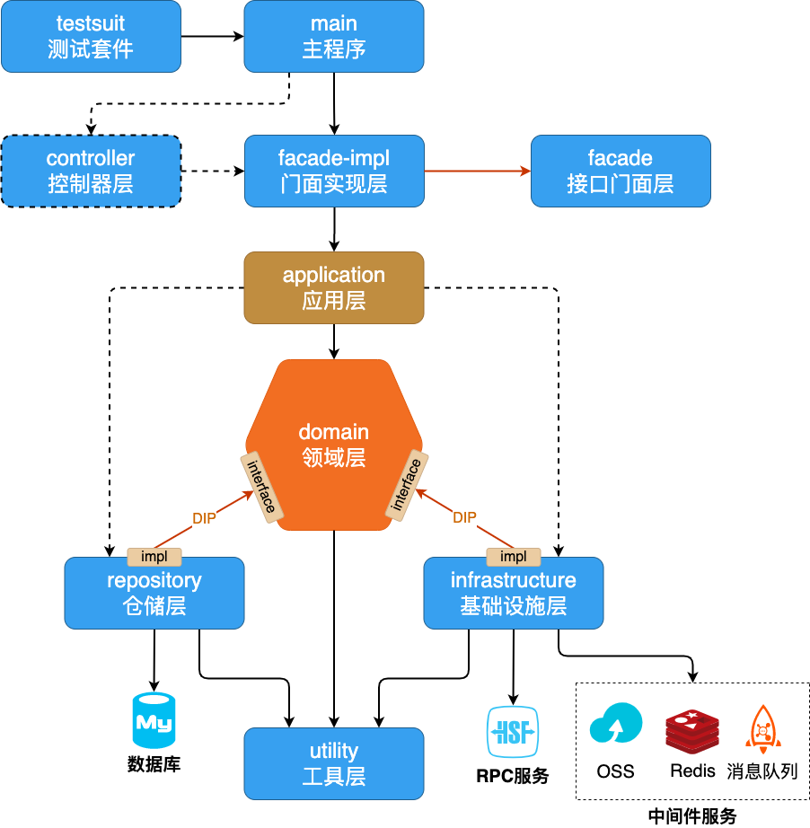
基本思想
- 为了保证核心业务逻辑的稳定，领域层应作为最纯粹、最少对外依赖的层次，只包含业务知识和业务规则，不该过多关心技术细节的实现（如存储、消息等）。
- 分层以领域层为核心来分层建设。
模块职责
测试套件（testsuite）：
测试模块，所有单测和集成测试写在该模块。它通过直接和间接依赖，可以访问到每个模块的代码，也即所有模块对测试层都是可见的。如果项目中有类似AliGenerator的代码自动生成工具，也应该放在该模块中。
主程序（main）：
应用的启动入口，包含启动相关的配置。
接口门面层（facade）：
该模块是对外发布的API包，对外暴露的SOA/RPC接口放在这里，外部应用使用我们的服务会依赖该包。一个应用可能会按照用途不同，设计多个facade模块。
接口门面实现层（facade-impl）：
实现了用户界面层（facade）中的接口，主要负责向用户显示信息和解释用户指令。处理输入的解析、验证、转换，还有输出的序列化。如果应用有多个facade模块，可以使用一个facade-impl来实现，也可以是多个。
控制器层（controller）：
可选。如果应用直接对外提供http服务，那么http的接口入口就在该层中，例如spring-boot中的Controller都放在这一层。
控制器层虽然依赖于facade-impl层，但是只能调用facade中声明的方法，这样可以防止业务逻辑从facade-impl层泄露到controller层中。
一般说来，http服务由专门的网关应用对外提供，微服务系统中这一层不需要。
应用层（application）：
定义要完成的业务功能，由该层负责协调和编排领域层的原子方法。因此应用层主要负责：
- 事务控制
- 查询仓储（注意：只能查询仓储，不能写仓储，写仓储是领域层的能力）
- 领域事件（domain event）的触发和监听
- 操作日志
- 安全认证
注意一点，应用层虚线依赖仓储层和基础设施层，应用层要调用仓储查询或者使用中间件都应该使用领域层声明的接口，不能够直接使用仓储层和基础设施层的实现，例如应用层中不能直接使用Mapper，而应该使用Repository接口。虚线依赖是因为仓储层和基础设施层必须挂到主程序这个根上，整个项目模块才能被组织起来。
领域层（domain）：
表达业务概念、业务状态、及业务规则。一个聚合（aggregate）一个package。领域层负责以下内容：
- 实体（entity）
- 值对象（value object）
- 领域服务（domain service）
- 领域事件（domain event）
- 仓储（repository）接口定义，读写仓储
- 依赖的外部服务（anti-corruption layer）的接口定义
- 工厂（factory）
结合团队以及兄弟团队的实践，建议实体采用贫血模式，实体和领域服务共同构成领域模型。
仓储层（repository）：
仓储层负责数据查询及持久化，仓储层本质上也属于一种基础设施，但是仓储层作为系统中重要的一环，因此从基础设施层中独立开来。DO对象只存在于仓储层，通过内部定义的Converter转为领域对象后供上层使用。
基础设施层（infrastructure）：
倒置依赖领域层，负责RPC服务以及中间件服务的调用和具体实现。经典DDD分层中依赖的外部服务的防腐层（anti-corruption layer）就在这里。
工具层（utility）：
和业务无关的工具方法都放在这里，比如Utils类，全局通用Exception定义等。utility会被整个项目其他模块直接或间接依赖，必须保证其无业务语义。
3. 编码规范
这里给出的编码规范是我基于团队实践总结出来的，不同团队可以有自己的规范，这里供参考：
POJO规范【强制】
POJO（Plain Ordinary Java Object）简单的Java对象，区别于Spring Bean。 POJO的对象后缀做如下约定。
DO 数据库模型
XXDO代表的是数据库模型，其中的字段就是数据库表字段的平铺格式。
Model 领域模型
XXModel代表某个领域模型，这是我们的逻辑核心。
DTO 外部传输对象
XXDTO 是对外的数据传输对象，一般DTO是在facade层定义的，在facade-impl层完成转换。
Info 内部传输对象
XXInfo是在application层和domain层之间的数据传输对象，和DTO的功能类似，区别在于DTO对外，Info对内。
VO 值对象
XXVO 代表了值对象，VO是Value Object简写，通过值对象可以接收其他系统facade传递过来的DTO。注意VO不是View Object(视图对象)，在项目中没有视图对象，因为是前后端分离，没有类似于jsp这种视图，另外DTO已经完全承载了和前端或者其他服务交互的职能，不再需要视图对象。
Query 查询对象
XXQuery 是仓储接口接收的查询参数封装的对象，一般仓储查询包含3个及以上的参数就应该封装。 XXQuery和仓储接口都是定义在领域层，在仓储层进行实现的。
Request 请求对象
XXRequest是facade层中定义的查询对象，一般一个facade接口包含3个或者以上的参数就应该使用Request进行封装。
Converter 转换器
各种类型的对象涉及到大量的转换，Converter结尾的类就是转换器，XXAA2BBConverter就代表了XX这个实体的AA对象类型转成BB对象类型。转换器放在对应的分层中，例如 Model2DOConverter和DO2ModelConverter就放在仓储层，Model2DTOConverter就放在 facade-impl层中。
注意：Converter建议逐个字段手写转换，不建议使用BeanUtils.copyProperties 或者 MapStruct对象转换工具，理由是使用了这类工具后，字段发生变化没法在编译阶段感知到，容易导致生产事故，所以推荐转换就使用笨方法，逐个字段转换。
Bean规范【强制】
应用采用了多层的结构，如果没有统一的命名规约，势必容易造成名字冲突的情况，这里对于Spring Bean做如下命名约定：
Controller 控制器
对外提供http服务的控制器，只存在于控制器层。
Facade 门面服务
通过门面的方式对外提供的服务接口一般直接以Facade结尾，可以细化为 XXWriteFacade: 操作服务 和 XXReadFacade: 查询服务。Facade对应的实现命名为 XXFacadeImpl。
FacadeImpl 门面服务实现
Facade门面服务对应的实现，XXFacadeImpl位于接口门面实现层(facade-impl)。 一般会将 FacadeImpl 发布成RPC服务。
AppService 应用层服务
应用层的服务以AppService结尾，可继续细化为 XXWriteAppService: 操作服务 和 XXReadAppService: 查询服务。
DomainService 领域服务
领域服务均以DomainService结尾。
Repository 仓储接口
仓储接口定义在领域层，其实现在仓储层，实现文件命名为 XXRepositoryImpl。
RepositoryImpl 仓储接口实现
仓储接口实现在仓储层，这是倒置依赖的体现。
Mapper 数据库查询接口
这是MyBatis的查询接口，是应用最底层的数据库操作文件，只允许在仓储层调用。每个XXMapper都会继承其基类XXBaseMapper，在基类中定义了基本的增删改查方法。
Client 中间件服务依赖接口
通过定义Client接口来消费中间件服务，Client定义在领域层，其对应的实现为 ClientImpl。这是防腐的设计思想。
ClientImpl 中间件服务依赖实现
这是对领域层中声明的依赖的实现，ClientImpl都是在基础设施层。
FacadeClient 外部RPC服务依赖接口
通过定义FacadeClient接口来消费RPC服务，FacadeClient定义在领域层，其对应的实现为 FacadeClientImpl。这是防腐层的设计思想。
FacadeClientImpl 外部RPC服务依赖实现
这是对领域层中声明的依赖的实现，FacadeClientImpl都是在基础设施层。
Configuration 配置
XXConfiguration是应用中的配置类，各层负责自己层的配置，例如DataSourceConfiguration关于数据源的配置，放到仓储层；WebConfiguration负责http的json配置，就放到控制器层。
各种类型的对象及Bean所处位置如下图所示：
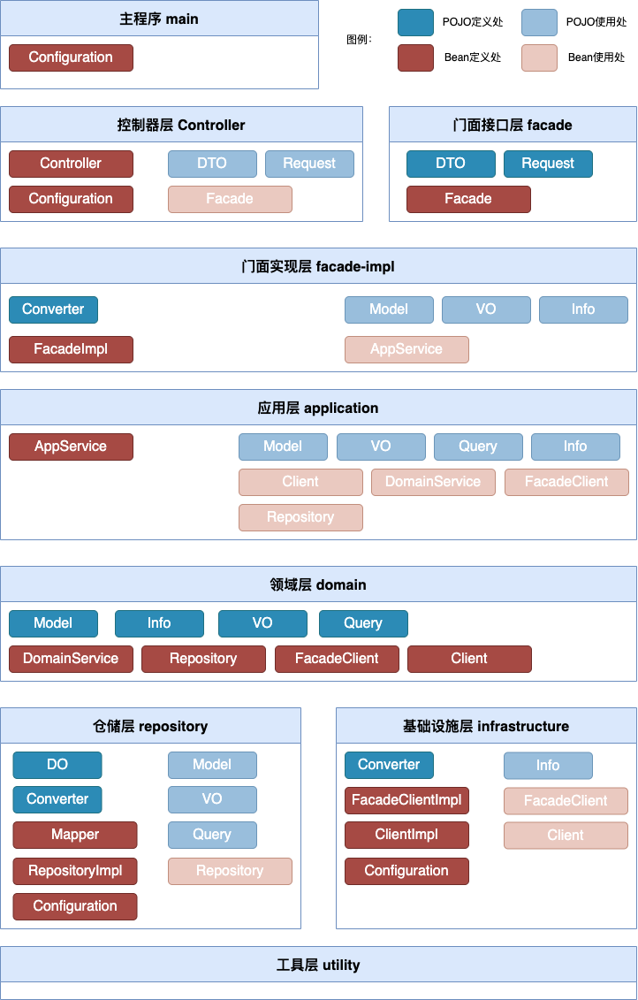
方法命名【建议】
Service/Repository/Client/DAO方法命名规约
- 获取单个对象的方法用query作前缀。
- 获取多个对象列表的方法用list作前缀，复数结尾，如：listObjects。
- 获取多个对象分页的方法用page作前缀，复数结尾，如：pageObjects。
- 获取统计值的方法用count作前缀。
- 插入的方法用insert作前缀。
- 删除的方法用delete作前缀。
- 修改的方法用update作前缀。
更多编码规范
项目中更多的编码规范请参考《阿里巴巴开发规约》。
编码规范多说两句
上面约定的模块分层和编码规范可能会给你一种比较冗长的感觉，光数据从数据库传输到http层都需要经过多个Bean以及多次POJO的转换，是不是没有必要这么麻烦呢？ 其实不然，这一套应用模块分层是面向团队协作设计的，如果仅仅是做个人小项目完全没有必要使用这一套分层框架，MVC模式就够了。这一套设计尽量贴合了领域驱动设计，每一层都有自己特定的职责，这样可以应对复杂的项目，用规范约束了编码风格，在一定程度上统一了团队的研发姿势，可以做到在团队中各司其职，严格的规范保证了团队代码质量的下限。
4. Saber工具
Saber工具位于testsuits中，它的作用是根据数据库表的元信息，自动生成Mapper和DO文件，省去逐字段手写的麻烦。如果增减字段，也可以重跑Saber工具就实现了字段和数据库一致。 Saber工具类似于Aligenerator。
操作方法
- 在SaberConfig文件中修改一些配置，主要包括表前缀，包名，jdbc信息等。
- 在x文件夹下，写一个XXCommand的类，该类包含main函数，可以执行。在该类中指定表名，分页查询字段，枚举映射关系，忽略字段等配置。
- 运行上面写的XXCommand类，这时候就能在项目下看到自动生成的XXBaseMapper.xml, XXMapper.xml, XXBaseMapper.java, XXMapper.java, XXDO.java 五个文件。
进阶用法
如果你希望根据数据库表字段信息生成前端文件或者数仓SQL文件，你可以自定义一个BlaBlaArtwork，写好对应的模板文件 TemplateBlaBla.vm，将BlaBlaArtwork注册到SaberHelper中即可。 这个时候再运行上面的XXCommand就能够得到BlaBlaArtwork中定义的产物了。
5. 项目演示
后端微服务1：https://github.com/eyebluecn/smart-classroom-misc
后端微服务2：https://github.com/eyebluecn/smart-classroom-subscription
前端项目：https://github.com/eyebluecn/smart-classroom-front
在线演示地址：https://classroom.eyeblue.cn/
演示项目中可以用读者和小编两种身份登录，小编可以创建专栏，读者可以订阅专栏和查看已订阅的专栏。
演示项目分为两个后端应用，smart-class-subscription是“专栏订阅系统”，完全按照微服务应用建设。smart-class-subscription就是所有其他微服务的合集，同时还包含一个控制层，用于提供http服务。后端应用技术栈为：SpringBoot, MyBatis, MySQL, Dubbo, Nacos, RocketMQ, Maven。
前端项目技术栈为：React, TypeScript, ReactRouter, Antd, Less, Vite。
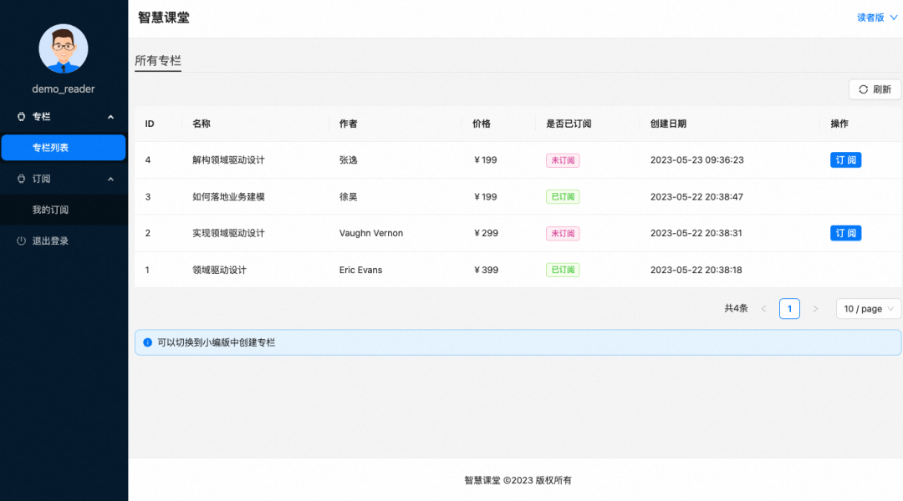
后记
我认为领域驱动设计是一种软件工程的思想，它不是一套模板，它的思想精髓值得软件工程师以及架构师们领会，即：
- 直接面向业务进行领域建模，将业务知识沉淀到领域模型中。
- 业务知识的沉淀不是一蹴而就，应该反复提炼，持续演进；为了让演进提炼的过程高效顺畅，团队使用统一语言来沟通、描述需求和设计方案。
- 高内聚、低耦合是应对软件复杂度的不二法则。领域、子域、限界上下文、聚合都是为这条宗旨服务的工具。
领域驱动设计也不是银弹，在软件开发过程中没有必要完全DDD一把梭，对于一些不复杂的项目，使用MVC模式开发反而更简单高效。同时业务本身的复杂度不是依靠某种软件设计思想或者设计范式就能规避的，DDD只是架构师们在架构设计过程中的一种指导思想，它本质上是一种工具。深刻理解业务，洞察问题本质才是一个架构师最核心的能力体现。当然，如果本文能够带你了解甚至是在工作中实践领域驱动设计，那本文的目的也就达到了。
八、致谢
本文参考借鉴了很多前辈关于领域驱动设计的内容，本文的形成是站在了巨人的肩膀上，参考了章三从基础概念到代码实践的文章结构，参考了甫田的事件风暴实践，参考了徐昊的业务建模。在此一并表示感谢。
参考引用
- Eric Evans《领域驱动设计》
- Vaughn Vernon《实现领域驱动设计》
- 徐昊《如何落地业务建模》
- Erich Gamma《设计模式：可复用面向对象软件的基础》
- EventStorming：https://www.eventstorming.com/
- 迄今为止最完整的DDD实践：https://blog.csdn.net/AlibabaTech1024/article/details/125674376
- 聊一聊，我对DDD的关键理解：https://mp.weixin.qq.com/s/fDU6MuIKs4wu8WDcsHsDzw
- 事件风暴与领域建模在阿里的实践：https://developer.aliyun.com/live/2877
- 阿里技术专家详解 DDD 系列 第一讲- Domain Primitive：https://zhuanlan.zhihu.com/p/340911587
- 限界上下文：冲破微服务设计困局的利器-阿里云开发者社区：https://developer.aliyun.com/article/913758?accounttraceid=d2b6e0e9135d48468535232849a22b2ebcey
- 复杂度应对之道 - COLA应用架构_cola 扩展点_张建飞（Frank）的博客-CSDN博客：https://blog.csdn.net/significantfrank/article/details/85785565
- 从壹开始微服务 [ DDD ] 之三 ║ 简单说说：领域、子域、限界上下文 - 老张的哲学 - 博客园：https://www.cnblogs.com/laozhang-is-phi/p/9845573.html
- 领域驱动设计详解：是什么、为什么、怎么做？：https://zhuanlan.zhihu.com/p/164757995?utm_source=wechat_timeline
- 领域驱动设计(DDD)-基础思想：https://zhuanlan.zhihu.com/p/109114670
- 阿里巴巴开发规约：https://developer.aliyun.com/ebook/386